Lập trình robot thật, trên một sân ảo
Lắp cảm biến, kéo khối lệnh hoặc viết Python, rồi xem chiếc xe chạy theo đúng định luật vật lí. Chạy ngay trên trình duyệt, miễn phí.
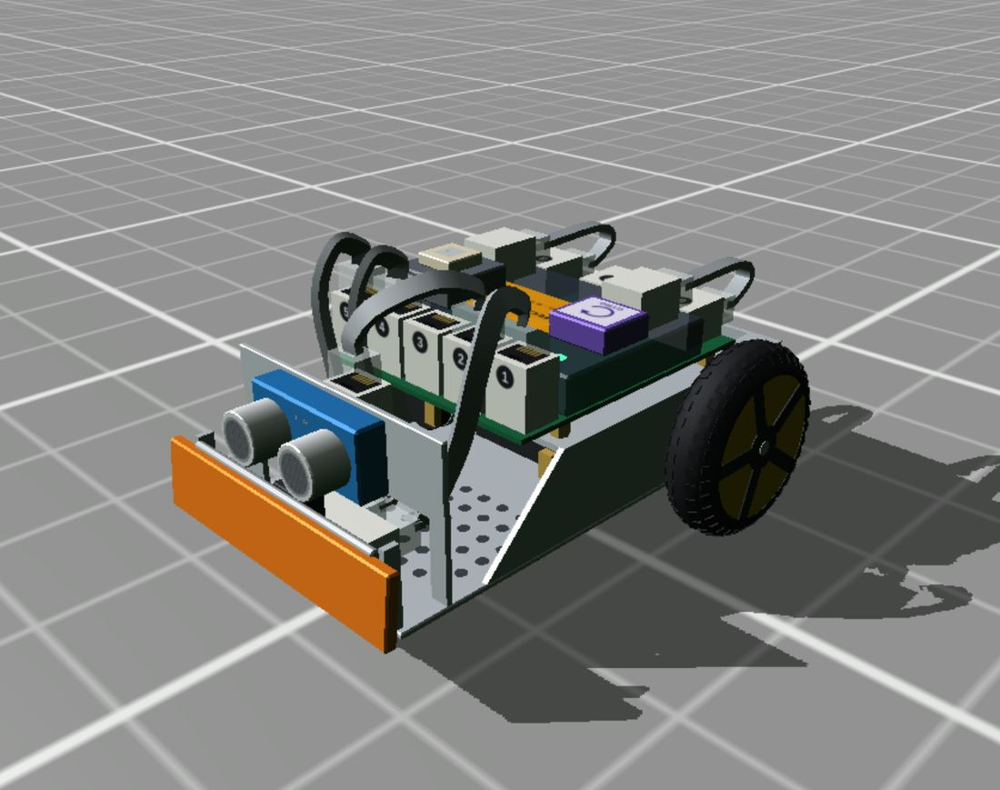
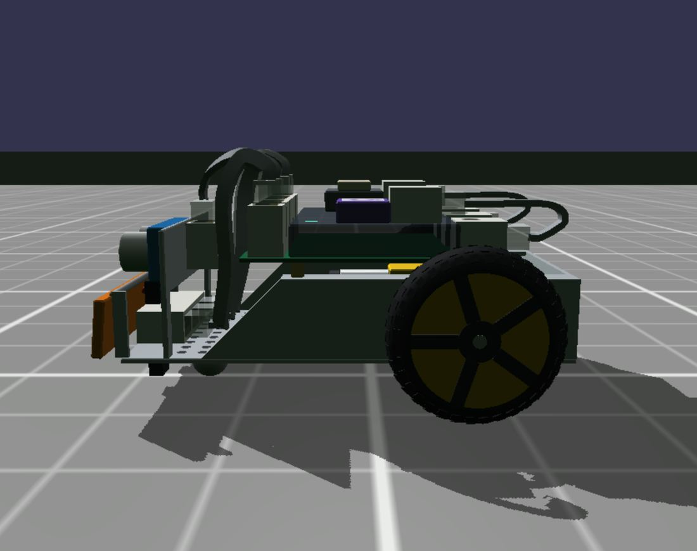
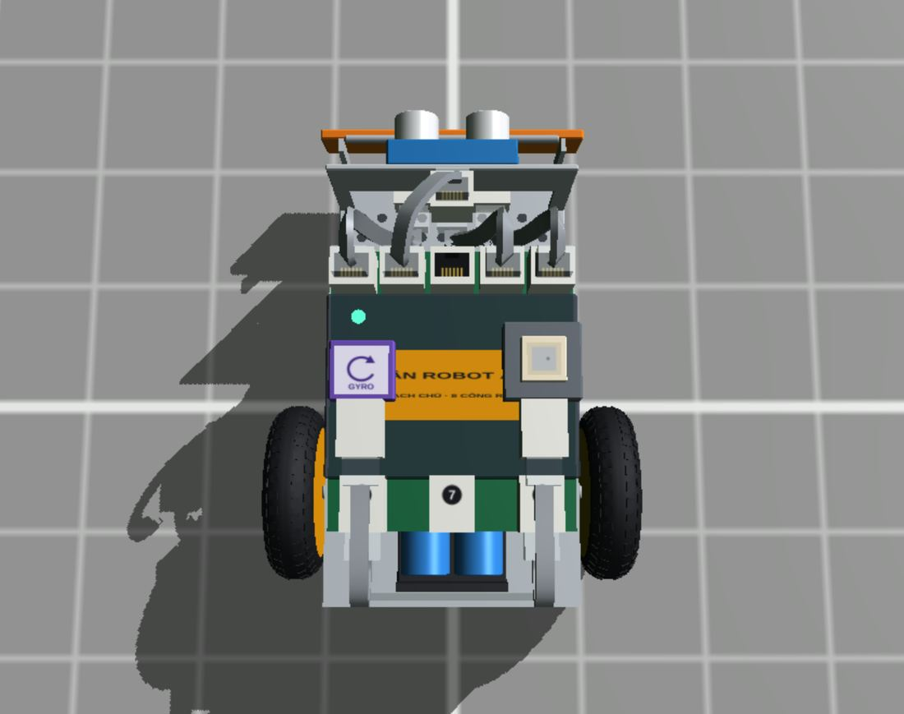
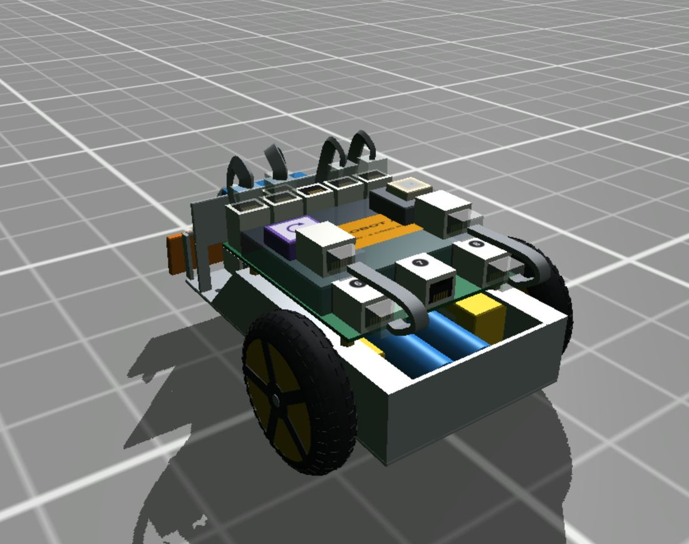
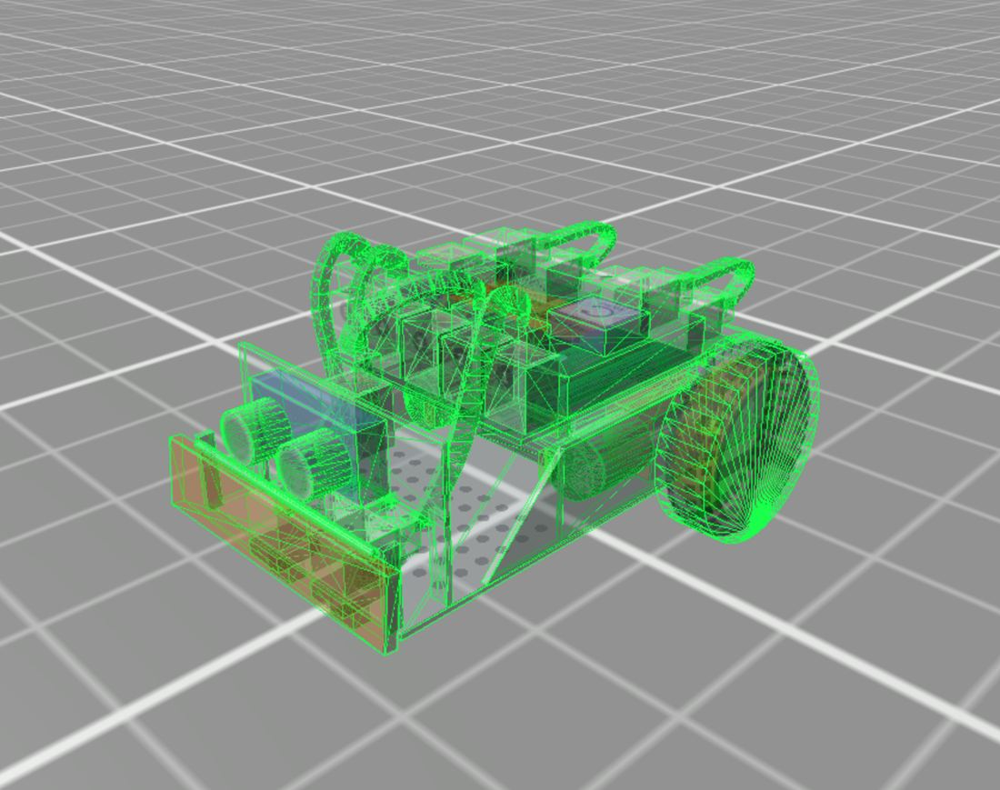
Nhìn từ trướcSân Robot Ảo là phòng thí nghiệm robot chạy trên trình duyệt, viết cho học sinh THCS từ lớp 6. Học sinh đi từ tiến, lùi, quay đến hiệu chỉnh motor, đọc cảm biến, rồi tới mê cung và thi đấu. Mỗi bài có 3 sao để biết mình đã làm được đến đâu.
Vật lí thật, không tính sẵn
Mỗi bánh có motor riêng. Xe đi thẳng hay quay là kết quả của lực ma sát ở hai bánh và bi, đúng như xe ngoài đời.
Xem chiếc xeSai là một phần của bài
Robot thật không bao giờ hoàn hảo: bánh lệch, motor yếu. Học sinh đo, sửa, chạy lại, và 3 sao cho biết đã tiến được bao xa.
Cách chấm saoMiễn phí, mở, tiếng Việt
Không cài đặt, không tài khoản. Giao diện và khối lệnh tiếng Việt. Mã nguồn mở theo GPL v3, trường nào cũng dùng và sửa được.
Mã nguồnMỗi giây, xe được tính 240 bước vật lí. Cả lớp có 27 bài thử thách và 81 sao để chinh phục.
Tám loại cảm biến, mô phỏng theo linh kiện thật
Mỗi cảm biến được mô phỏng theo cách linh kiện thật hoạt động: tiếng vọng, ánh sáng phản xạ, công tắc bị ép. Mở “Nguyên lí” để xem cách giải thích cho học sinh.
-
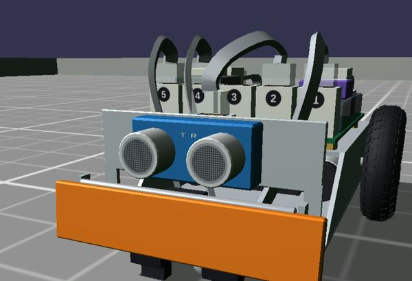
Khoảng cáchSiêu âm HC-SR04
Đo xa từ 2 đến 400 cm, mỗi 50 ms một lần.
Nguyên lí
Phát xung 40 kHz, đo thời gian tiếng vọng t. Khoảng cách d = v·t / 2 với v = 343 m/s. Mô phỏng 37 tia trong nón 15°, mặt nghiêng quá 30° không cho tiếng vọng.
Nói với học sinh: như con dơi, kêu một tiếng rồi đếm xem bao lâu thì nghe tiếng vọng.
-
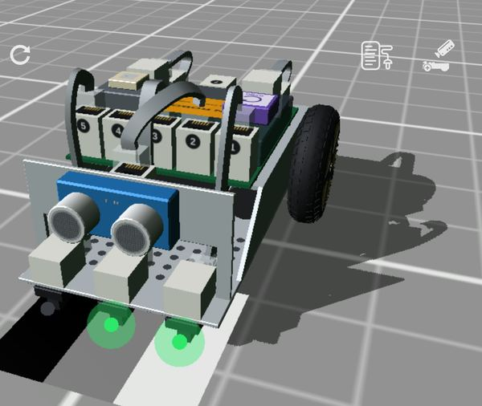
Ánh sángDò line TCRT5000
Phân biệt vạch đen với nền sáng, đọc số hoặc tương tự.
Nguyên lí
LED hồng ngoại 950 nm chiếu xuống, phototransistor đo phần ánh sáng dội lại. Nền trắng phản xạ mạnh, mực đen hấp thụ. Tín hiệu mạnh nhất khi cách sân 2,5 mm.
Nói với học sinh: đèn pin chiếu xuống đất, màu đen “nuốt” ánh sáng nên mắt thấy tối.
-
Màu sắc
Cảm biến màu TCS34725
Đọc ba kênh đỏ, lục, lam của mặt sân.
Nguyên lí
LED trắng chiếu xuống, chip đo có ba kính lọc R, G, B. Mỗi kênh đo phần ánh sáng cùng màu bị mặt sân phản xạ, đã cân bằng trắng ở độ cao chuẩn.
Nói với học sinh: ba con mắt đeo ba cặp kính màu đỏ, xanh lá, xanh dương.
-
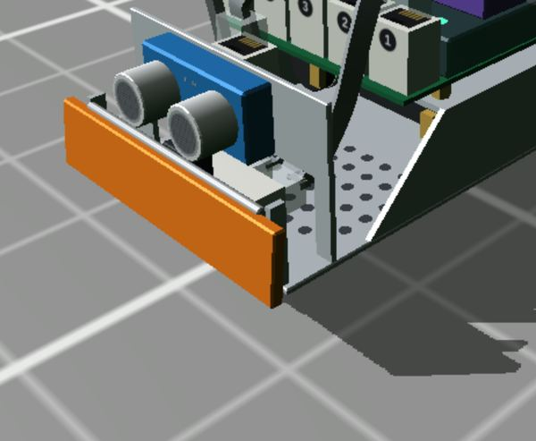
Va chạmCông tắc chạm
Tấm cản có bản lề và lò xo, ép vào là đóng mạch.
Nguyên lí
Công tắc hành trình nằm sau tấm cản. Đóng khi tấm bị ép còn cách thân dưới 3°, mở lại khi quá 4° (có trễ để không chập chờn).
Nói với học sinh: như nút chuông cửa, ấn vào là mạch kín.
-
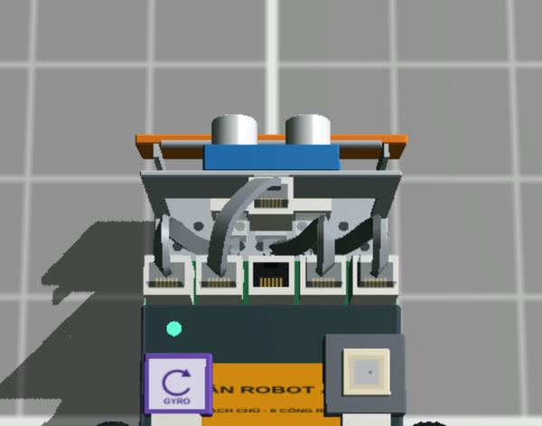
Góc quayCon quay (gyro)
Biết xe đã quay bao nhiêu độ, kể cả khi bị đẩy lệch.
Nguyên lí
Đo vận tốc góc ω của thân xe rồi cộng dồn theo thời gian: góc hướng θ = Σ ω·Δt. Có thể bật trôi và nhiễu như gyro thật.
Nói với học sinh: mỗi lần xoay một chút thì cộng vào, cộng mãi ra tổng số độ đã quay.
-
Vị trí
GPS
Cho tọa độ của xe trên sân, 10 lần mỗi giây.
Nguyên lí
Trả về tọa độ của ăng-ten trên mặt sân. Có thể bật sai số vài cm để học sinh thấy vì sao phải lấy trung bình.
Nói với học sinh: sân là bản đồ có ô tọa độ, xe biết mình đang đứng ở ô nào.
-
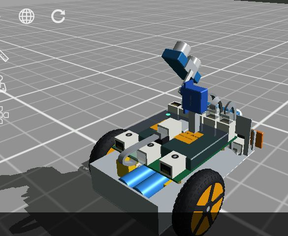
Cơ cấuServo SG90
Quay tay quay tới đúng góc 0–180°, mang theo cảm biến.
Nguyên lí
Động cơ có mạch đo vị trí và tự điều chỉnh tới góc được lệnh. Mô-men kẹt 1,8 kgf·cm, quay 60° trong 0,1 s.
Nói với học sinh: động cơ biết tự dừng đúng góc mình bảo.
-
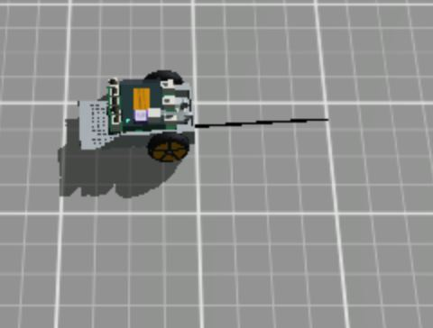
VẽBút vẽ
Hạ bút để xe vẽ lại đường mình đi.
Nguyên lí
Bút đặt đúng giữa trục hai bánh, là tâm quay của xe. Nam châm điện nhấc bút lên 3,5 mm, lò xo đẩy ngòi xuống.
Nói với học sinh: xe quay tại chỗ thì đầu bút đứng yên, nên góc hình vẽ sắc nét.
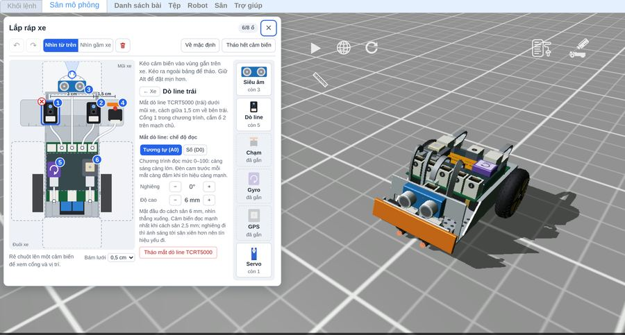
Tự lắp xe bằng kéo thả
Mở Robot → Lắp ráp xe, kéo cảm biến từ khay vào chỗ gắn. Xe 3D dựng lại ngay: hình, hình va chạm và khối lượng đều tính lại.
- 7 vùng gắn: 4 giá siêu âm, thanh dưới mũi, gầm xe, nắp mạch chủ
- Bám lưới 0,5 cm, hoàn tác và làm lại
- Sơn khung, tấm cản và vành bánh
Từ khối lệnh đến Python, cùng một chiếc xe
Học sinh mới bắt đầu kéo khối. Khi đã quen thì chuyển sang Python. Chương trình nào cũng chạy trên cùng một sân và được chấm cùng một cách.
Kéo, thả, ghép
Khối bo tròn, màu theo nhóm, chữ tiếng Việt. Chế độ Cơ bản chỉ hiện khối cần cho bài, Nâng cao mở đủ vòng lặp, biến, phép toán. Mỗi bài có code mẫu để học sinh đọc và sửa.
Mở Khối lệnh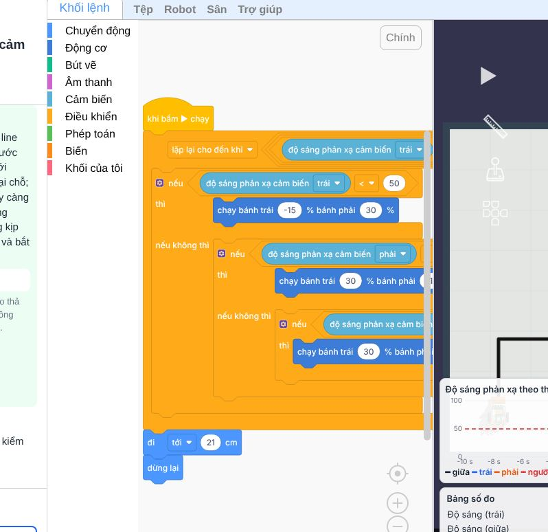
Viết mã như robot thật
Tab Python dùng thư viện kiểu ev3dev2: LargeMotor, MoveTank, cảm biến theo cổng. Bảng số đo vẽ đồ thị độ sáng theo thời gian để học sinh chọn ngưỡng.
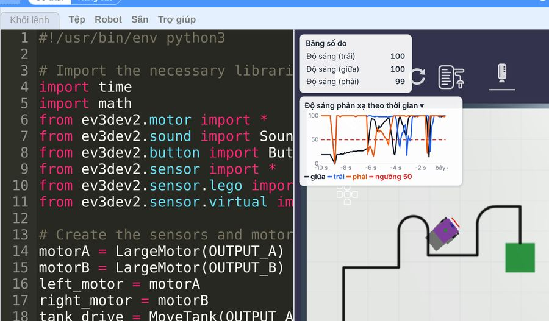
Bấm ▶ Chạy, xem kết quả
Robot chạy trên sân, hệ thống chấm theo tiêu chí của bài: tới đích, không chạm tường, đúng thời gian, chương trình gọn. Tiến độ lưu ngay trên máy, tải về được dưới dạng tệp.
Xem danh sách bài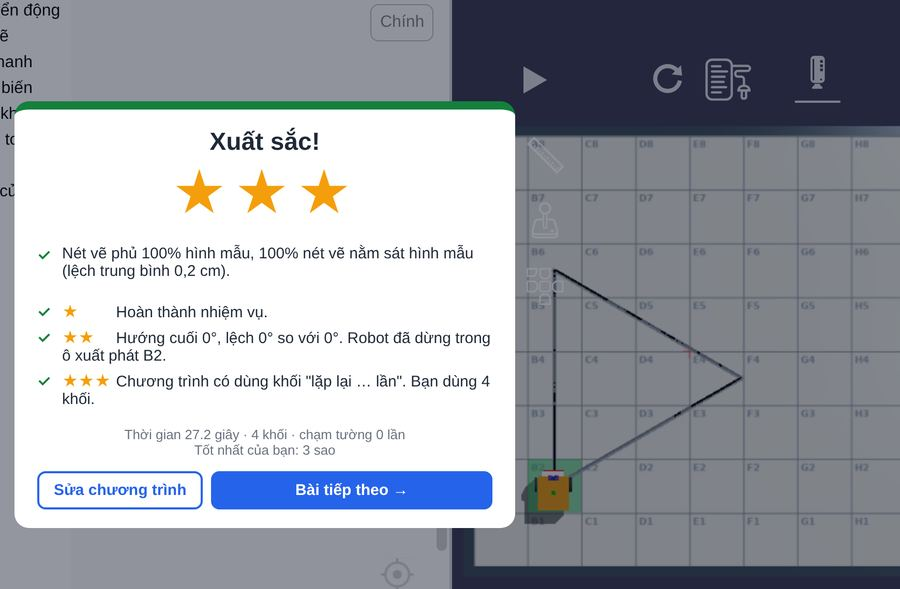
Sân cho từng kĩ năng
Mỗi sân dựng cho một kĩ năng: lưới tọa độ để đo quãng đường, vạch kẻ để dò đường, tường để đo khoảng cách. Sân thi đấu đã chơi được ở chế độ lập trình tự do, bài có chấm sao đang được làm.
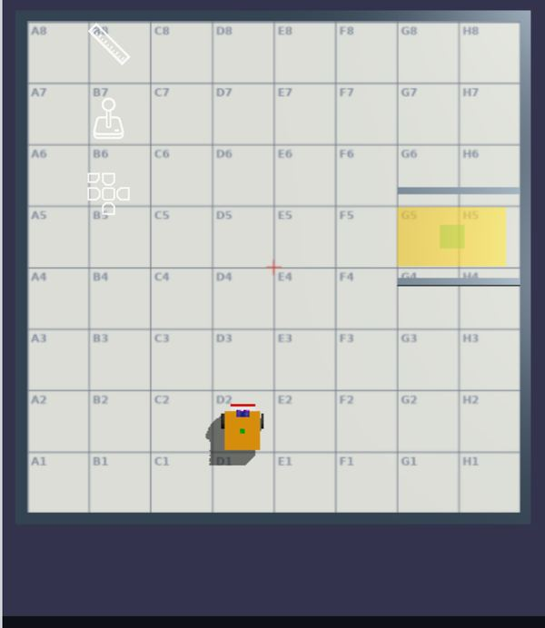
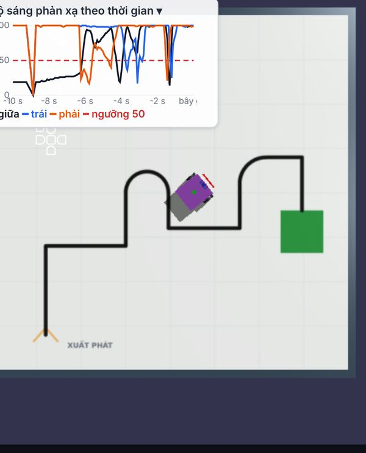
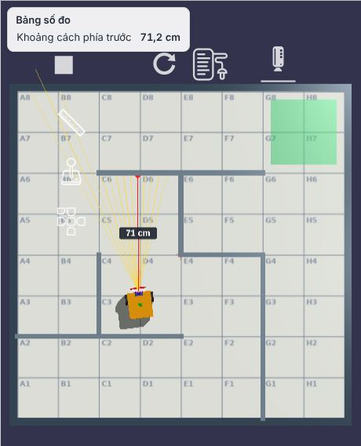
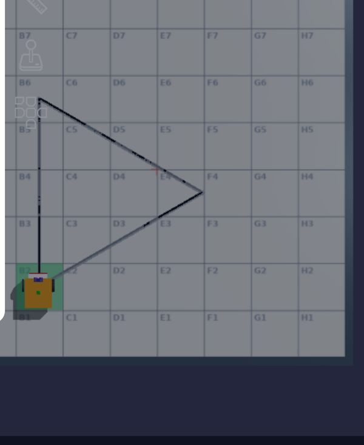
- Chơi tự do
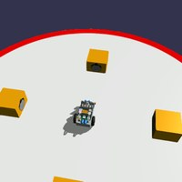
- Chơi tự do
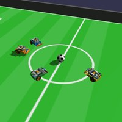